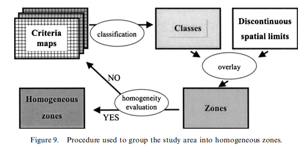
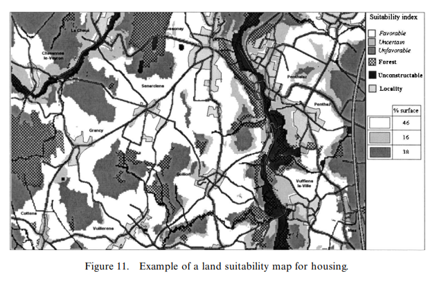

Multicriteria Analysis (MCA) is a complex analysis method which analyses multiple criteria for one specific purpose. In the field of geoscience, this means combining different sets of data (elevation, land use, proximity to roads, environmental factors) and assigning each criterion a specific weight factor representing the importance of that specific factor on the results of the analysis. Example of multicriteria analysis usign GIS would be finding the most suitable places for urban greeining. For such analysis, the evaluated criteria for every location could be slope, average temperature, road proximity, and population density. Assignment of the weight factors would depend on the local environment, decisions of the analysts and experts, and the type of analysis algorythm used. Precisely becuase of the freedom in criteria selection and weight factor determination MCA is widely utilized together with GIS, as GIS inherently incorporate wide assortment of data usefol for analyses. Other than already mentioned urban greening, MCA is commonly used to answer simiral questions in urban and ifrastructure planning, agriculture, disaster prevention, environmental conservation and other. MCA can also be used to make predictive models to model migration, ocean current change, or the weather - wather forecast is´entirely reliant on GIS data coupled with MCA.
This scientific paper by Joerin, Thériault, and Musy from 2010 is a grate example how multicriteria analysis can be used together with GIS data. The researchers applied MCA to develop an easy to use system of land use suitability determination with the goal of facilitating cooperation between stakeholders in land development. For the purpose of the study the scientists created a land suitability map for housing of an 50 square kilometer area in Vaud, Switzerland. The area was represented in GIS both in vector and raster format. The vector layer was used for data management, whereas the raster layer was used for actual spatial analysis. This raster layer was composed of 80 000 25x25 m pixels.
The MCA in this study used 8 criteria:
These criteria were selected as they cover interests of all important stakeholders in housing domain. In the Switzerland, the noise levels in residential areas are regulated by law, which gave that criterion more weight than it would have otherwise, or the criterion of flood risk is entiraly missing, as the Vaud canton does not experience floods.
To analyze the land use suitability, researchers used outranking analysis method ELECTRE-TRI. Outranking analysis is based on comparing all possible alternatives, which in this case would mean comparing all 80 000 pixel between each other, which is computationally infeasible. To make use of outranking analysis possible, researchers first divided the studied area into homogenous zones - zones with all criteria within certain ranges. This division was done by creating maps of each criterion using unsupervised classification and overlaying them together with discontinuous spatial limits (administrative limits, landslide perimeters), resulting in 650 distinct zones. The zones themselves were analysed using ELECTRE-TRI method, which divided the zones into three categories - favourable, doubtful, and unfavourable. The ELECTRE-TRI uses four additional imput parameters for each criterion - weight, indifference, preference, and veto. Weight is a relative importance of the criterion, indifference is the largest value that can be considered indignificant, preference is the smallest value that advantages the criterion, and veto is a specific rule which overrides other parameters (limit on noise set by regulation automatically excludes all areas above limit).

adapted from Florent Joerin, Marius Thériault & Andre Musy (2001) Using GIS and outranking multicriteria analysis for land-use suitability assessment, International Journal of Geographical Information Science, 15:2, 166, DOI: 10.1080/13658810051030487
The result of this study was a interactive map showing zones favourable for building of houses. However, the researchers have conducted this study mainly to demonstarte the feasibility and possible application of using MCA in conjunction with GIS software, which at that time was an emerging field. The study presents clear frmaework for conducting MCA using spatial data that can be easily applied to other research questions.

adapted from Florent Joerin, Marius Thériault & Andre Musy (2001) Using GIS and outranking multicriteria analysis for land-use suitability assessment, International Journal of Geographical Information Science, 15:2, 169, DOI: 10.1080/13658810051030487
Reference: Florent Joerin, Marius Thériault & Andre Musy (2001) Using GIS and outranking multicriteria analysis for land-use suitability assessment, International Journal of Geographical Information Science, 15:2, 153-174, DOI: 10.1080/13658810051030487